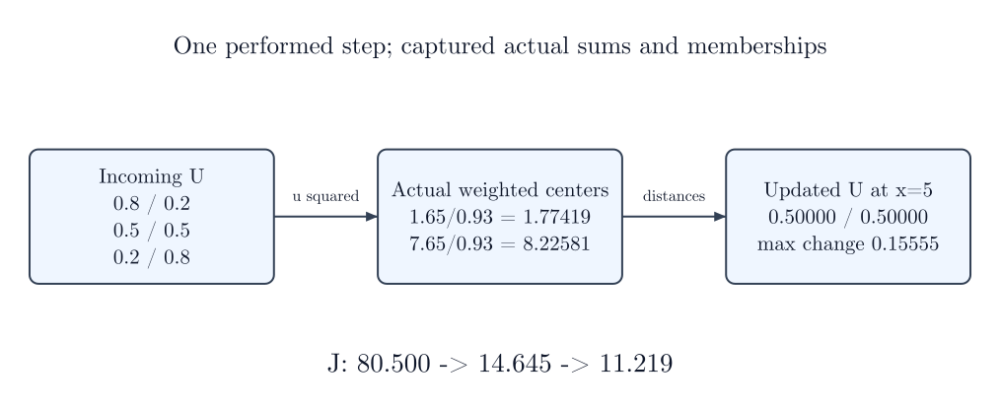
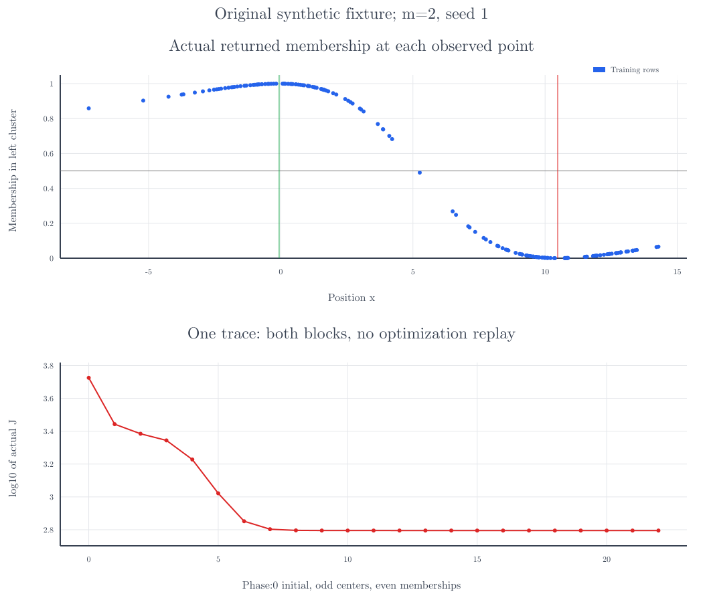
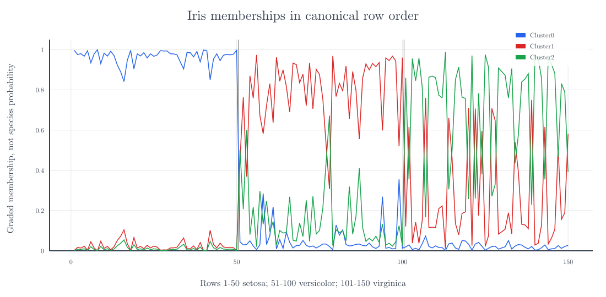
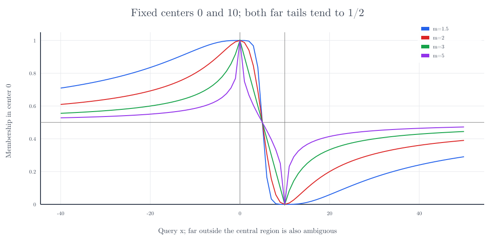
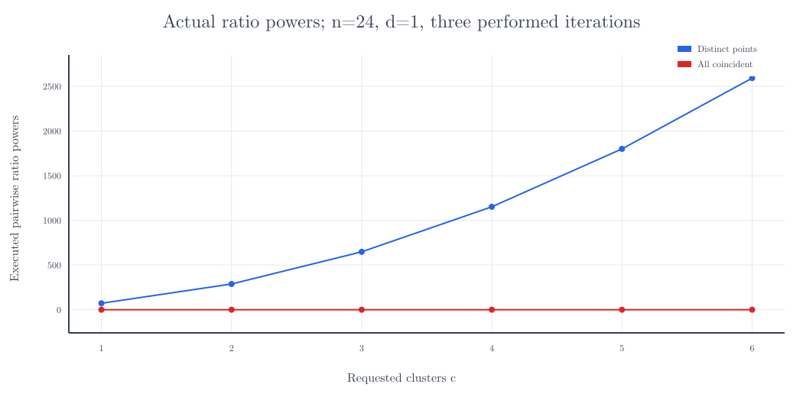

Fuzzy c-means: actual alternating updates and graded similarity
Abstract
Fuzzy c-means fits Euclidean centers and gives each point a graded membership in every cluster, with each row summing to one. Three one-dimensional points make the weighted center update and constrained membership update checkable. Actual native traces then preserve the original overlapping-blob example, including its center and objective values. Four raw Iris measurements provide a descriptive application with species excluded from fitting. Fixed-center queries expose a limitation: a very distant point can have nearly uniform memberships. Phase objectives, actual work and owned history distinguish the mathematical updates from floating-point stopping and resource limits.
Three points and one actual alternating step
Take points 0,5,10, two clusters and fuzzifier m=2. Supply initial membership rows (0.8,0.2), (0.5,0.5), (0.2,0.8). The left cluster uses squared weights 0.64,0.25,0.04, whose sum is 0.93. Its weighted numerator is 1.65, giving center 55/31, approximately 1.77419. The other center is 255/31, approximately 8.22581. The following diagram uses actual accumulated numerators and denominators; its returned membership row at the middle point is (0.5,0.5) at displayed precision. Initial centers are zero, as in the seeded API.
#include <dm/dm.hpp>
namespace dm=datamunge;
int main(){
std::filesystem::create_directories("build");
const dm::algorithms::FuzzyCMeansMatrix x{{0},{5},{10}},u{{.8,.2},{.5,.5},{.2,.8}};
const auto t=dm::algorithms::fuzzy_c_means_trace_from(x,u,2,1,0,48);
const auto& f=t.frames.at(0);
std::print("| cluster | actual numerator | actual denominator | updated center |\n| ---: | ---: | ---: | ---: |\n");
for(std::size_t j=0;j<2;++j)std::print("| {} | {:.8f} | {:.8f} | {:.8f} |\n",j,f.numerators[j][0],f.denominators[j],f.centers[j][0]);
std::print("\n| point | updated u0 | updated u1 |\n| ---: | ---: | ---: |\n");
for(std::size_t i=0;i<x.size();++i)std::print("| {:.0f} | {:.8f} | {:.8f} |\n",x[i][0],f.membership[i][0],f.membership[i][1]);
std::print("\nObjective: before {:.8f}; after centers {:.8f}; after memberships {:.8f}. Maximum change {:.8f}; seeded draws {}.\n",f.objective_before,f.objective_centers,f.objective_membership,f.max_change,t.work.initial_draws);
dm::graphics::Diagram d(62,1100);dm::graphics::DiagramNodeStyle box;box.width=4;box.height=2.2;box.font_size=21;
d.node("u",{0,0},"Incoming U\n0.8 / 0.2\n0.5 / 0.5\n0.2 / 0.8",box)
.node("v",{5.7,0},std::format("Actual weighted centers\n{:.2f}/{:.2f} = {:.5f}\n{:.2f}/{:.2f} = {:.5f}",f.numerators[0][0],f.denominators[0],f.centers[0][0],f.numerators[1][0],f.denominators[1],f.centers[1][0]),box)
.node("new",{11.4,0},std::format("Updated U at x=5\n{:.5f} / {:.5f}\nmax change {:.5f}",f.membership[1][0],f.membership[1][1],f.max_change),box)
.edge("u","v","u squared").edge("v","new","distances")
.text({5.7,2.8},"One performed step; captured actual sums and memberships",25)
.text({5.7,-2.4},std::format("J: {:.3f} -> {:.3f} -> {:.3f}",f.objective_before,f.objective_centers,f.objective_membership),27)
.save_svg("build/fcm_tiny.svg");
if(t.result.iterations!=1||std::abs(f.membership[1][0]-.5)>1e-14)throw std::runtime_error("tiny update");
}| cluster | actual numerator | actual denominator | updated center |
|---|---|---|---|
| 0 | 1.65000000 | 0.93000000 | 1.77419355 |
| 1 | 7.65000000 | 0.93000000 | 8.22580645 |
| point | updated u0 | updated u1 |
|---|---|---|
| 0 | 0.95554739 | 0.04445261 |
| 5 | 0.50000000 | 0.50000000 |
| 10 | 0.04445261 | 0.95554739 |
Objective: before 80.50000000; after centers 14.64516129; after memberships 11.21858660. Maximum change 0.15554739; seeded draws 0.

Derive the two updates
For points x_i, centers v_j and membership rows u_i constrained to the simplex,
Hold U fixed. For a cluster with positive powered weight W_j, differentiating with respect to v_j gives 2(W_j v_j-sum_i u_ij^m x_i)=0. Thus
Now hold centers fixed and suppose all distances d_ij are positive. A row's Lagrangian is sum_j u_ijm d_ij² plus lambda_i(sum_j u_ij-1). Its stationarity equation makes u_ij proportional to d_ij(-2/(m-1)). Normalization yields
For positive distances the row problem is strictly convex, so this is its unique minimizer. Zero-distance centers require a separate choice supported on those centers. The native policy assigns the whole row to the last center whose computed distance is strictly below 1e-12. Several exactly coincident centers could mathematically share weight; this implementation chooses one. An all-zero incoming membership column leaves its old center unchanged.
Exact coordinate minimization cannot increase J. This is a block-descent argument, not a global-optimum or finite-precision convergence certificate. The near-coincidence threshold is approximate, floating operations round, and the stopping test only checks the largest membership change against a tolerance.
[Dunn's 1973 paper](https://www.tandfonline.com/doi/abs/10.1080/01969727308546046) introduced the fuzzy relative of ISODATA. [Bezdek, Ehrlich and Full (1984)](https://doi.org/10.1016/0098-3004(84)90020-7) give the objective and alternating updates in equations 11 and algorithm A1–A4, printed pages 193–194 ([full paper](https://web-ext.u-aizu.ac.jp/course/bmclass/documents/FCM%20-%20The%20Fuzzy%20c-Means%20Clustering%20Algorithm.pdf)). Their discussion distinguishes membership from statistical uncertainty and allows other norms. This native implementation uses Euclidean distance and its stated near-coincidence policy.
Preserve the original overlapping blobs
The original 160 one-dimensional points come from 80 Gaussian draws around 0 and 80 around 10, each with standard deviation 2.2, using mt19937_64 seed 21. The library now owns that fixture and the query-membership calculation; the report no longer duplicates either algorithm. Initialization uses seed 1 for the fit, m=2, maximum 200 iterations and tolerance 1e-6. Standard-library distribution mapping limits bit portability across implementations.
The trace records the two phase objectives from each actual iteration. Returned centers were computed from the incoming memberships of the last iteration; returned memberships were updated using those centers. There is no extra final center update. The reported objective uses that exact returned pair.
#include <dm/dm.hpp>
namespace dm=datamunge;
int main(){
std::filesystem::create_directories("build");
const auto data=dm::algorithms::fuzzy_c_means_example_data();
const auto t=dm::algorithms::fuzzy_c_means_trace(data,2,2,200,1e-6,1);
const auto& fit=t.result;const std::size_t left=fit.centers[0][0]<fit.centers[1][0]?0:1;
std::print("Original blobs: {} points; {} iterations; objective {:.3f}; centers {:.7f}, {:.4f}; stopped by tolerance {}.\n",data.size(),fit.iterations,fit.objective,fit.centers[0][0],fit.centers[1][0],t.stopped_by_tolerance);
const dm::algorithms::FuzzyCMeansMatrix queries{{0},{2.5},{5},{7.5},{10}};
const auto membership=dm::algorithms::fuzzy_c_means_membership(queries,fit.centers);
std::print("\n| query x | membership in left cluster |\n| ---: | ---: |\n");for(std::size_t i=0;i<queries.size();++i)std::print("| {:.1f} | {:.8f} |\n",queries[i][0],membership[i][left]);
std::vector<double>xs,ys,phase{0},J{std::log10(t.initial_objective)};
for(std::size_t i=0;i<data.size();++i){xs.push_back(data[i][0]);ys.push_back(fit.membership[i][left]);}
std::print("\n| iteration | J after centers | J after memberships | maximum membership change |\n| ---: | ---: | ---: | ---: |\n");
for(const auto& f:t.frames){std::print("| {} | {:.8f} | {:.8f} | {:.8f} |\n",f.iteration+1,f.objective_centers,f.objective_membership,f.max_change);phase.push_back(2*f.iteration+1);J.push_back(std::log10(f.objective_centers));phase.push_back(2*f.iteration+2);J.push_back(std::log10(f.objective_membership));}
auto memberships=dm::graphics::RPlot::create();
memberships.points(xs,ys,"Training rows",{37,99,235},3).abline_h(.5,{120,120,120},1).abline_v(fit.centers[left][0],{22,163,74},1).abline_v(fit.centers[1-left][0],{220,38,38},1)
.title("Actual returned membership at each observed point").xlab("Position x").ylab("Membership in left cluster").y_limits(0,1.05);
auto objective=dm::graphics::RPlot::create();
objective.lines(phase,J,"",{220,38,38},2).points(phase,J,"",{220,38,38},3).title("One trace: both blocks, no optimization replay").xlab("Phase:0 initial, odd centers, even memberships").ylab("log10 of actual J");
dm::graphics::RLayout::create(2,1).add(memberships).add(objective).size(1050,900).title("Original synthetic fixture; m=2, seed 1").fit_panels().save_svg("build/fcm_original.svg");
if(fit.iterations!=11||std::abs(fit.objective-623.804)>5e-4)throw std::runtime_error("preserved original fit");
}Original blobs: 160 points; 11 iterations; objective 623.804; centers -0.0614927, 10.4761; stopped by tolerance true.
| query x | membership in left cluster |
|---|---|
| 0.0 | 0.99996555 |
| 2.5 | 0.90650682 |
| 5.0 | 0.53928156 |
| 7.5 | 0.13412908 |
| 10.0 | 0.00223376 |
| iteration | J after centers | J after memberships | maximum membership change |
|---|---|---|---|
| 1 | 2773.21280028 | 2423.61188801 | 0.68566235 |
| 2 | 2208.38562696 | 1689.01685008 | 0.28261146 |
| 3 | 1051.50073822 | 710.67080657 | 0.18349065 |
| 4 | 635.64446208 | 625.21044345 | 0.04164904 |
| 5 | 623.95961624 | 623.82234723 | 0.00605853 |
| 6 | 623.80671499 | 623.80480148 | 0.00096984 |
| 7 | 623.80453447 | 623.80449119 | 0.00018583 |
| 8 | 623.80448319 | 623.80448157 | 0.00003884 |
| 9 | 623.80448123 | 623.80448116 | 0.00000879 |
| 10 | 623.80448114 | 623.80448114 | 0.00000197 |
| 11 | 623.80448114 | 623.80448113 | 0.00000044 |

The supplied prediction API also evaluates new points from fixed centers. Its outputs are graded geometric similarities, not calibrated class probabilities or estimates of how much mixture material generated an observation.
Iris: four raw measurements, species held out of fitting
Use the canonical 150-row Iris table and all four numeric measurements in their recorded centimetres. Species is excluded from the fit and appears only in descriptive grouped means afterwards. No standardization is applied; changing one coordinate's units changes Euclidean geometry. Cluster indices remain the native fit order and can permute across seeds.
The coefficient F=(1/n)sum_ij u_ij² and entropy H=-(1/n)sum_ij u_ij log u_ij describe concentration. Nominally 1/c<=F<=1 and 0<=H<=log c. They are not accuracy, a calibrated uncertainty score, or automatic proof that c is appropriate. Comparing their raw values across different c or m requires care.
#include <dm/dm.hpp>
namespace dm=datamunge;
int main(){
std::filesystem::create_directories("build");
auto iris=dm::datasets::iris();
const std::vector<std::string> features{"Sepal.Length","Sepal.Width","Petal.Length","Petal.Width"};
dm::algorithms::FuzzyCMeansMatrix points(iris.nrows());
for(std::size_t i=0;i<iris.nrows();++i)for(const auto& name:features)points[i].push_back(iris.double_at(name,i));
const auto fit=dm::algorithms::fuzzy_c_means_work(points,3,2,300,1e-7,7);
const auto part=dm::algorithms::fuzzy_c_means_partition(fit.result.membership);
std::print("Iris: {} rows, four raw cm features; iterations {}; J {:.6f}; partition coefficient {:.6f}; entropy {:.6f} nats; stopped by tolerance {}.\n",points.size(),fit.result.iterations,fit.result.objective,part.coefficient,part.entropy_nats,fit.stopped_by_tolerance);
std::print("\n| native cluster | Sepal.Length | Sepal.Width | Petal.Length | Petal.Width |\n| ---: | ---: | ---: | ---: | ---: |\n");
for(std::size_t j=0;j<3;++j){const auto& v=fit.result.centers[j];std::print("| {} | {:.6f} | {:.6f} | {:.6f} | {:.6f} |\n",j,v[0],v[1],v[2],v[3]);}
std::vector<double>index,u0,u1,u2;
for(std::size_t i=0;i<points.size();++i){index.push_back(i+1);u0.push_back(fit.result.membership[i][0]);u1.push_back(fit.result.membership[i][1]);u2.push_back(fit.result.membership[i][2]);}
iris.add_column("u0",u0);iris.add_column("u1",u1);iris.add_column("u2",u2);
const auto grouped=iris|dm::group_by("Species")|dm::summarise(dm::agg::mean("u0","mean_u0"),dm::agg::mean("u1","mean_u1"),dm::agg::mean("u2","mean_u2"));
std::print("\nSpecies shown after fitting; descriptive membership means:\n{}\n",grouped.to_md());
auto plot=dm::graphics::RPlot::create();
plot.lines(index,u0,"Cluster0",{37,99,235},1.5).lines(index,u1,"Cluster1",{220,38,38},1.5).lines(index,u2,"Cluster2",{22,163,74},1.5)
.abline_v(50.5,{120,120,120},1).abline_v(100.5,{120,120,120},1)
.legend({"Cluster0","Cluster1","Cluster2"},{{37,99,235},{220,38,38},{22,163,74}})
.title("Iris memberships in canonical row order").xlab("Rows 1-50 setosa; 51-100 versicolor; 101-150 virginica").ylab("Graded membership, not species probability").y_limits(0,1.05).size(1100,540).save_svg("build/fcm_iris.svg");
if(points.size()!=150||fit.result.centers.size()!=3||!std::isfinite(part.entropy_nats))throw std::runtime_error("Iris native fit");
}Iris: 150 rows, four raw cm features; iterations 33; J 60.505711; partition coefficient 0.783397; entropy 0.395492 nats; stopped by tolerance true.
| native cluster | Sepal.Length | Sepal.Width | Petal.Length | Petal.Width |
|---|---|---|---|---|
| 0 | 5.003966 | 3.414089 | 1.482816 | 0.253546 |
| 1 | 5.888932 | 2.761069 | 4.363952 | 1.397315 |
| 2 | 6.775011 | 3.052382 | 5.646782 | 2.053547 |
Species shown after fitting; descriptive membership means:
| Species | mean_u0 | mean_u1 | mean_u2 |
|---|---|---|---|
| setosa | 0.965 | 0.024 | 0.011 |
| versicolor | 0.053 | 0.794 | 0.153 |
| virginica | 0.021 | 0.262 | 0.717 |

Fixed centers: softness and distant-point ambiguity
For two fixed centers 0 and 10 and m=2, the left membership is
It equals 1 at 0, 0 at 10 and 1/2 at 5. But as x tends to either infinity it returns to 1/2, because both distances become almost equal. A distant outlier can therefore look maximally ambiguous rather than receive low membership in every cluster. The original report's smooth transition describes its central region; globally this function is not a monotone S-shaped curve.
For fixed positive distances, m approaching 1 concentrates membership on the unique nearest center; m increasing without bound approaches uniform membership. Those are fixed-center limits, not promises about the solutions of a refitted floating-point optimizer. A value too close to 1 can overflow ratio powers; huge m can underflow every powered weight in a center update. The native API reports these numerical failures rather than presenting them as a successful fit.
#include <dm/dm.hpp>
namespace dm=datamunge;
int main(){
std::filesystem::create_directories("build");
const dm::algorithms::FuzzyCMeansMatrix centers{{0},{10}};
dm::algorithms::FuzzyCMeansMatrix query;std::vector<double>x;
for(int position=-40;position<=50;++position){query.push_back({double(position)});x.push_back(position);}
auto plot=dm::graphics::RPlot::create();
const std::array<double,4> m{1.5,2.,3.,5.};
const std::array<dm::graphics::RGB,4> colors{{{37,99,235},{220,38,38},{22,163,74},{147,51,234}}};
std::print("| m | u_left(0) | u_left(5) | u_left(10) | u_left(-1000000) | u_left(1000000) |\n| ---: | ---: | ---: | ---: | ---: | ---: |\n");
for(std::size_t k=0;k<m.size();++k){
const auto u=dm::algorithms::fuzzy_c_means_membership(query,centers,m[k]);std::vector<double>y;for(const auto& row:u)y.push_back(row[0]);plot.lines(x,y,std::format("m={}",m[k]),colors[k],2);
const auto check=dm::algorithms::fuzzy_c_means_membership({{0},{5},{10},{-1e6},{1e6}},centers,m[k]);
std::print("| {:.1f} | {:.1f} | {:.1f} | {:.1f} | {:.8f} | {:.8f} |\n",m[k],check[0][0],check[1][0],check[2][0],check[3][0],check[4][0]);
}
plot.legend({"m=1.5","m=2","m=3","m=5"},{{37,99,235},{220,38,38},{22,163,74},{147,51,234}})
.abline_h(.5,{120,120,120},1).abline_v(0,{120,120,120},1).abline_v(10,{120,120,120},1)
.title("Fixed centers 0 and 10; both far tails tend to 1/2").xlab("Query x; far outside the central region is also ambiguous").ylab("Membership in center 0").y_limits(0,1.05).size(1100,540).save_svg("build/fcm_softness.svg");
}| m | u_left(0) | u_left(5) | u_left(10) | u_left(-1000000) | u_left(1000000) |
|---|---|---|---|---|---|
| 1.5 | 1.0 | 0.5 | 0.0 | 0.50001000 | 0.49999000 |
| 2.0 | 1.0 | 0.5 | 0.0 | 0.50000500 | 0.49999500 |
| 3.0 | 1.0 | 0.5 | 0.0 | 0.50000250 | 0.49999750 |
| 5.0 | 1.0 | 0.5 | 0.0 | 0.50000125 | 0.49999875 |

Actual work, numerical domains and whole-history admission
Each performed center block costs order ncd; distance computation also costs order ncd. This implementation uses the pairwise ratio formula directly, so a noncoincident row evaluates c² ratio powers. Per iteration the combined order is nc(d+c). A near-coincident row skips those ratio powers, while all its distances were still computed. Input and result storage include nd,cd,nc; the ordinary routine retains only its current state and scratch arrays. Traced frames add retained history and extra phase objectives.
The trace quota counts matrix row records and scalar entries, not bytes or peak RAM. With n points,d coordinates,c clusters and T requested iterations, its whole upper bound is
The base owns data, initial memberships and initial zero centers. Each frame owns one metadata record, centers, memberships, actual numerators, denominators and distances. The default cap is one million entries; zero disables only this optional cap, while count and container bounds remain. Whole-request admission precedes input copies and initialization draws, with no early-stop discount, truncation or partial trace.
All shapes and finite values are checked before zero-iteration shortcuts and quotas. Supplied membership rows must sum to one within absolute 1e-12 in long-double accumulation and are not normalized. Actual nonfinite arithmetic throws; an entirely underflowed positive cluster-weight column throws. Individual finite rounding and underflow still require numerical judgment. Trace phase objectives perform extra computations: an initial zero-center objective can overflow even if an ordinary fitted final objective is representable.
#include <dm/dm.hpp>
namespace dm=datamunge;
int main(){
std::filesystem::create_directories("build");
dm::algorithms::FuzzyCMeansMatrix x{{0},{5},{10}},u{{.8,.2},{.5,.5},{.2,.8}};
bool rejected=false;try{(void)dm::algorithms::fuzzy_c_means_trace_from(x,u,2,1,0,47);}catch(const std::length_error&){rejected=true;}
const auto t=dm::algorithms::fuzzy_c_means_trace_from(x,u,2,1,0,48);
x[0][0]=99;u[0][0]=.1;const bool owned=t.data[0][0]==0&&t.initial_membership[0][0]==.8;
const auto zero=dm::algorithms::fuzzy_c_means({{1},{3}},1,2,0);
const auto tie=dm::algorithms::fuzzy_c_means_membership({{0}},{{0},{0}});
bool ragged=false,nan=false,underflow=false;
try{(void)dm::algorithms::fuzzy_c_means({{1,2},{3}},1,2,0);}catch(const std::invalid_argument&){ragged=true;}
try{(void)dm::algorithms::fuzzy_c_means({{NAN},{1}},1,2,0);}catch(const std::invalid_argument&){nan=true;}
try{(void)dm::algorithms::fuzzy_c_means({{1},{2}},2,10000,1);}catch(const std::underflow_error&){underflow=true;}
std::print("Tiny upper entries {}; cap47 rejected {}; cap48 admitted true; owned after edits {}. Original upper entries {}.\n",dm::algorithms::fuzzy_c_means_trace_entries(3,1,2,1),rejected,owned,dm::algorithms::fuzzy_c_means_trace_entries(160,1,2,200));
std::print("Zero iterations: center {}; memberships {}; J {}; iterations {}. Duplicate-center query membership {}.\n",zero.centers,zero.membership,zero.objective,zero.iterations,tie);
std::print("Domain checks: ragged rejected {}; NaN rejected {}; all positive weights underflow rejected {}.\n",ragged,nan,underflow);
std::print("\n| c | generic center weights | generic distances | generic ratio powers | coincident ratio powers |\n| ---: | ---: | ---: | ---: | ---: |\n");
std::vector<double>cs,generic,coincident;
dm::algorithms::FuzzyCMeansMatrix distinct,identical(24,std::vector<double>{0});for(int i=0;i<24;++i)distinct.push_back({double(i*i)});
for(std::size_t c=1;c<=6;++c){
const auto a=dm::algorithms::fuzzy_c_means_work(distinct,c,2,3,0,1);
const auto b=dm::algorithms::fuzzy_c_means_work(identical,c,2,3,0,1);
std::print("| {} | {} | {} | {} | {} |\n",c,a.work.center_weights,a.work.membership_distances,a.work.ratio_powers,b.work.ratio_powers);
cs.push_back(c);generic.push_back(a.work.ratio_powers);coincident.push_back(b.work.ratio_powers);
}
auto plot=dm::graphics::RPlot::create();
plot.lines(cs,generic,"Distinct points",{37,99,235},2).points(cs,generic,"",{37,99,235},4)
.lines(cs,coincident,"All coincident",{220,38,38},2).points(cs,coincident,"",{220,38,38},4)
.legend({"Distinct points","All coincident"},{{37,99,235},{220,38,38}})
.title("Actual ratio powers; n=24, d=1, three performed iterations").xlab("Requested clusters c").ylab("Executed pairwise ratio powers").size(1050,520).save_svg("build/fcm_controls.svg");
if(!rejected||!owned||!ragged||!nan||!underflow)throw std::runtime_error("owned history and domain controls");
}Tiny upper entries 48; cap47 rejected true; cap48 admitted true; owned after edits true. Original upper entries 195004. Zero iterations: center [[0]]; memberships [[1], [1]]; J 10; iterations 0. Duplicate-center query membership [[0, 1]]. Domain checks: ragged rejected true; NaN rejected true; all positive weights underflow rejected true.
| c | generic center weights | generic distances | generic ratio powers | coincident ratio powers |
|---|---|---|---|---|
| 1 | 72 | 72 | 72 | 0 |
| 2 | 144 | 144 | 288 | 0 |
| 3 | 216 | 216 | 648 | 0 |
| 4 | 288 | 288 | 1152 | 0 |
| 5 | 360 | 360 | 1800 | 0 |
| 6 | 432 | 432 | 2592 | 0 |

A small final membership change is a stopping condition, not proof of the best clustering or a semantic explanation of every ambiguous row. Keep the chosen features, units, cluster count, fuzzifier, initialization, numerical limits and interpretation of membership visible alongside the fit.